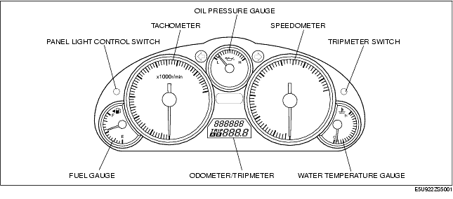
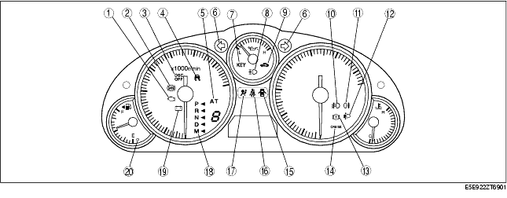

Technical Guide ➭ BODY & ACCESSORIES ➭ INSTRUMENTATION/DRIVER INFO. ➭ INSTRUMENT CLUSTER STRUCTURAL VIEW
INSTRUMENT CLUSTER STRUCTURAL VIEW
id092200531300
{: #wp1059776}
Meter And Gauge

Warning And Indicator Light

×: Applicable{: #wp1059830}
|
No. {: #wp1059969} |
Warning and indicator light {: #wp1059971} |
Input signal source {: #wp1059973} |
CAN system {: #wp1059975} |
Note {: #wp1059977} |
|---|---|---|---|---|
|
1 {: #wp1059839} |
MIL {: #wp1059841} |
PCM {: #wp1059897} |
× {: #wp1059900} |
|
|
2 {: #wp1060004} |
ABS warning light {: #wp1060007} |
• DSC HU/CM {: #wp1060010} • ABS HU/CM {: #wp1060161} |
× {: #wp1060013} |
|
|
3 {: #wp1060020} |
DSC OFF light {: #wp1060023} |
DSC HU/CM {: #wp1060026} |
× {: #wp1060029} |
With DSC {: #wp1060032} |
|
4 {: #wp1060036} |
DSC indicator light {: #wp1060039} |
DSC HU/CM {: #wp1060042} |
× {: #wp1060045} |
With DSC {: #wp1060048} |
|
5 {: #wp1060052} |
AT warning light {: #wp1060055} |
TCM {: #wp1060058} |
× {: #wp1060061} |
AT {: #wp1060064} |
|
6 {: #wp1060068} |
Turn indicator light {: #wp1060071} |
Flasher control module {: #wp1060074} |
|
|
|
7 {: #wp1060285} |
Keyless indicator light {: #wp1060288} |
Keyless control module {: #wp1060291} |
× {: #wp1060294} |
With advanced keyless system {: #wp1060297} |
|
Keyless warning light {: #wp1060304} |
||||
|
8 {: #wp1060347} |
High-beam indicator light {: #wp1060350} |
Headlight (HI) {: #wp1060353} |
|
|
|
9 {: #wp1060389} |
Security light {: #wp1060392} |
Keyless control module {: #wp1060395} |
× {: #wp1060398} |
|
|
10 {: #wp1060430} |
Front fog indicator light {: #wp1060433} |
Front fog light relay {: #wp1060436} |
|
With front fog light {: #wp1060442} |
|
11 {: #wp1060471} |
Rear fog indicator light {: #wp1060474} |
Rear fog light relay {: #wp1060477} |
|
With rear fog light {: #wp1060483} |
|
12 {: #wp1060512} |
Head light auto leveling warning light {: #wp1060515} |
Auto leveling control module {: #wp1060518} |
|
With head light auto leveling system {: #wp1060524} |
|
13 {: #wp1060553} |
Brake system warning light {: #wp1060556} |
• DSC HU/CM {: #wp1060559} • ABS HU/CM {: #wp1060612} |
× {: #wp1060562} |
|
|
• Parking brake switch {: #wp1060575} • Brake fluid level sensor {: #wp1060647} |
|
|
||
|
14 {: #wp1060665} |
Cruise main indicator light {: #wp1060668} |
PCM {: #wp1060671} |
× {: #wp1060674} |
With cruise control system {: #wp1060677} |
|
Cruise set indicator light {: #wp1060684} |
||||
|
15 {: #wp1060727} |
Door ajar warning light {: #wp1060730} |
Door switches {: #wp1060733} |
|
|
|
16 {: #wp1060768} |
Seat belt warning light {: #wp1060771} |
SAS control module {: #wp1060774} |
|
|
|
17 {: #wp1060809} |
Air bag system warning light {: #wp1060812} |
SAS control module {: #wp1060815} |
|
|
|
18 {: #wp1060850} |
Selector indicator light {: #wp1060853} |
TCM {: #wp1060856} |
× {: #wp1060859} |
AT {: #wp1060862} |
|
19 {: #wp1060891} |
Generator warning light {: #wp1060894} |
PCM {: #wp1060897} |
× {: #wp1060900} |
|
|
20 {: #wp1060932} |
Fuel-level warning light {: #wp1060935} |
Fuel gauge sender unit {: #wp1060938} |
|
|